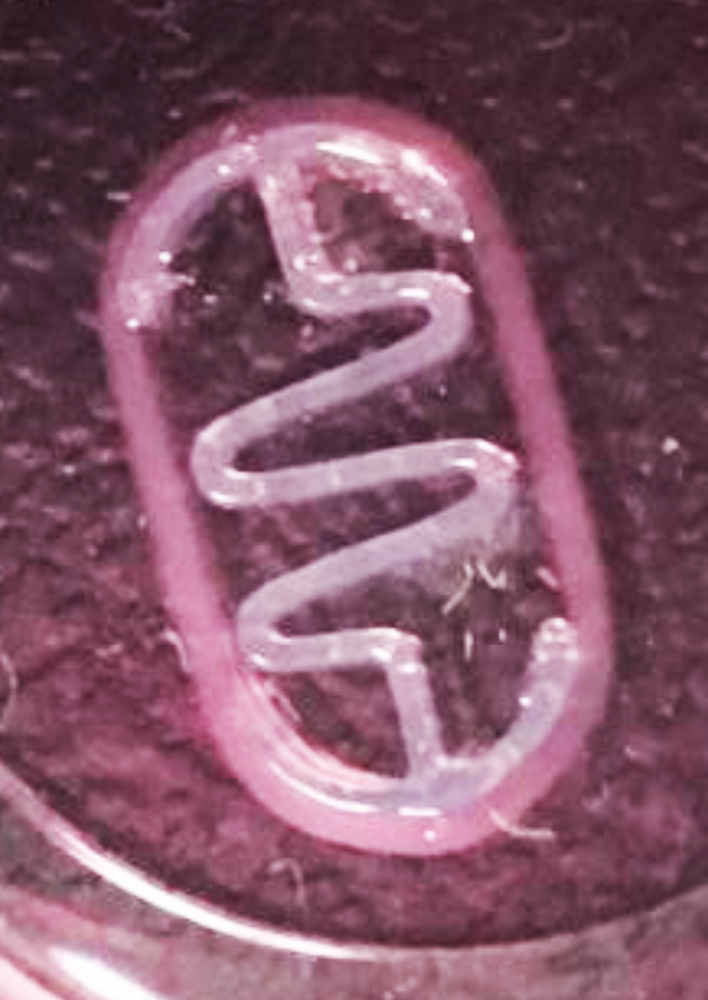
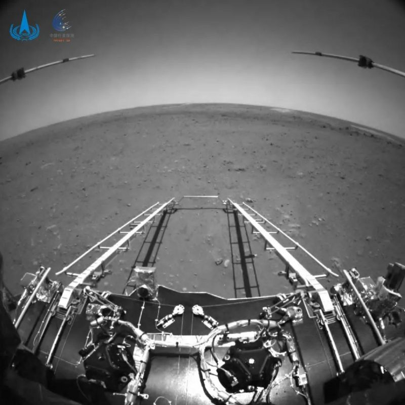

ÚLTIMAS NOTICIAS
Impresión 3D y células musculares: la fórmula de los nuevos robots vivos

Un equipo del IBEC catalán desarrolla una generación de biobots con una estructura plástica, 800 veces más rápidos y con capacidad para entrenarse a sí mismos. Un grupo de investigadores españoles del Instituto de Bioingeniería de Cataluña (IBEC) ha desarrollado una nueva generación de biobots (robots con una parte de su anatomía artificial y otra compuesta por células) con capacidad para auto-entrenarse, nadar y moverse 791 veces más rápido que la generación actual. Las futuras aplicaciones de estos robots pueden abrir numerosas puertas en campos como la administración de fármacos, el desarrollo de prótesis o en la limpieza medioambiental. Estos pequeños robots, de poco más de un centímetro de longitud, cuentan en su interior con un esqueleto fabricado con una impresora 3D. Este esqueleto, hecho con un polímero llamado PDMS, “es lo suficientemente débil como para poder apretarlo y a la vez elástico para que devuelva esa fuerza”, cuenta Samuel Sánchez, investigador ICREA en el IBEC y uno de los líderes del proyecto junto a María Giux. Es la primera vez que se incluye una estructura de este tipo en un sistema vivo de robótica blanda.
WhatsApp: qué pasa si no aceptas las nuevas condiciones de uso de la aplicación antes del 15 de mayo

WhatsApp fijó para este sábado el límite de tiempo que le da a sus millones de usuarios para que acepten los nuevos términos y condiciones de uso que causaron una oleada de críticas a la plataforma a comienzos de este año. Con sus nuevos términos, la plataforma está pidiendo a sus usuarios (excepto a los que residen en la región europea) que acepten compartir metadatos con Facebook, la firma matriz del servicio de mensajería. A partir de este sábado, quienes no acepten la nueva actualización comenzarán a recibir mensajes persistentes recordándoles que deben aceptar los nuevos términos. "No se eliminará la cuenta de ningún usuario ni se quitará el acceso a las funciones de WhatsApp el 15 de mayo debido a esta actualización", dice la plataforma en su web
Las primeras imágenes tomadas por Zhurong, el robot de China que aterrizó en Marte

China ha publicado las primeras imágenes después de que Zhurong, su robot explorador, aterrizara en Marte. La vista frontal muestra el paisaje por delante del robot mientras se sitúa sobre su plataforma de aterrizaje. La imagen que mira hacia atrás revela los paneles solares de Zhurong. Este robot explorador aterrizó en el planeta rojo el pasado domingo temprano según el horario local de Pekín. China se convirtió así en el segundo país, tras Estados Unidos, en poner con éxito un robot en la superficie de Marte y utilizarlo durante un tiempo significativo. Los científicos chinos esperan obtener al menos 90 días marcianos de servicio del robot de seis ruedas en su ubicación en Utopia Planitia, un vasto terreno en el hemisferio norte del planeta. La Administración Espacial Nacional China (CNSA por sus siglas en inglés) publicó estas fotos en su página web. Incluso hay un par de videos cortos sobre el momento en que el aeroshell del robot, la cápsula que usó para ingresar a la atmósfera marciana, sale del orbitador Tianwen-1, el satélite que transportó al robot desde la Tierra.